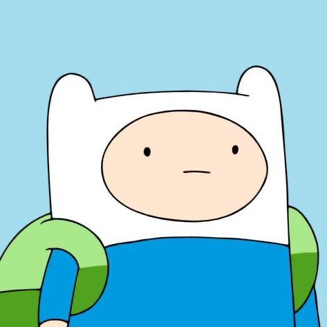
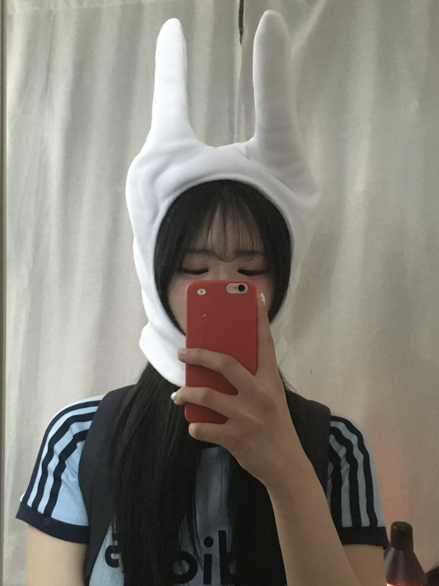

Nahyeon Kwon
상명대학교 3학년 | 휴먼지능정보공학전공 | 프론트엔드 개발자
|
자기소개
저는 현재 상명대학교 휴먼지능정보공학전공에 재학 중인 3학년
권나현입니다.
프론트엔드 개발에 흥미를 느낍니다.
|
현재 활동
- 전공: 상명대학교 휴먼지능정보공학전공
- 진행 중: 멋쟁이사자처럼 13기 아기사자
- 목표: 웹 Challenger
- 기술 스택: Figma, HTML, CSS 등
|
기술 스택
Figma, HTML, CSS 등
|
프로젝트 경험
SM@ Biohealth COSSTHON: 안면장애 재활 치료 어플리케이션
EGO: 장소 추천과 하루 일정 설계를 지원하는 맞춤형 서비스
ⓒ 2025 권나현 | 상명대학교 휴먼지능정보공학전공 | Frontend Developer